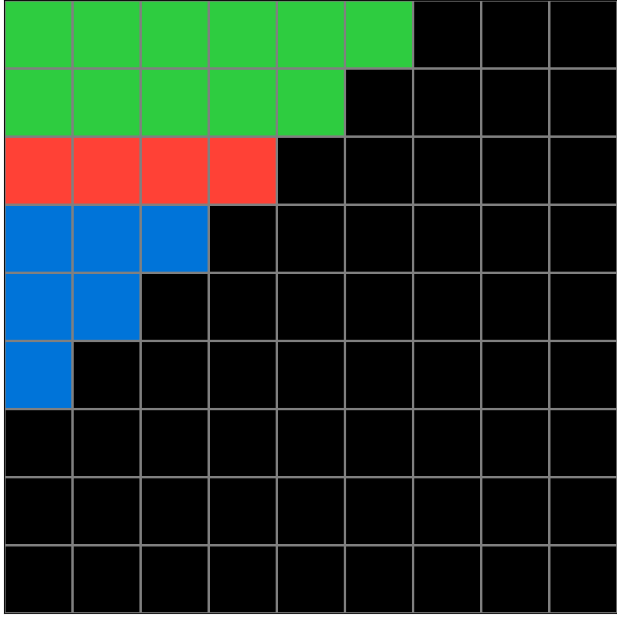
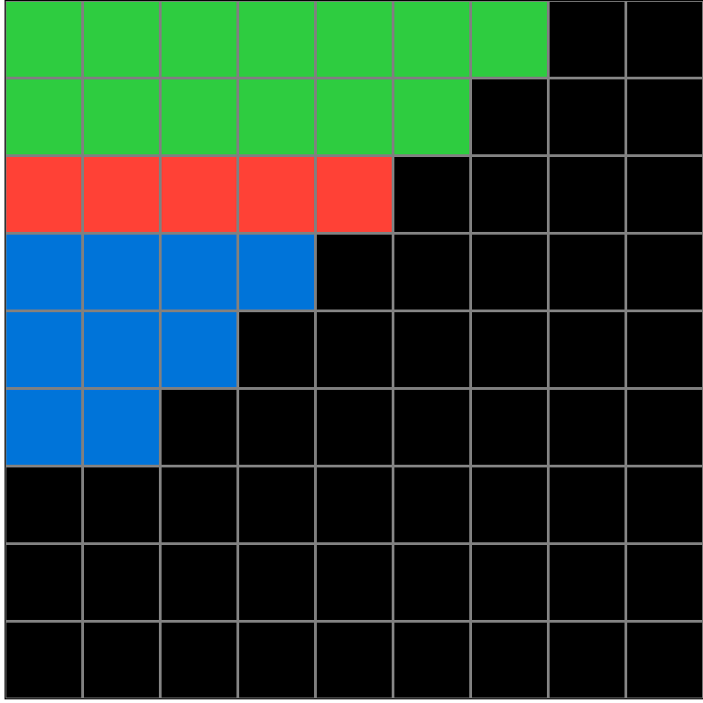
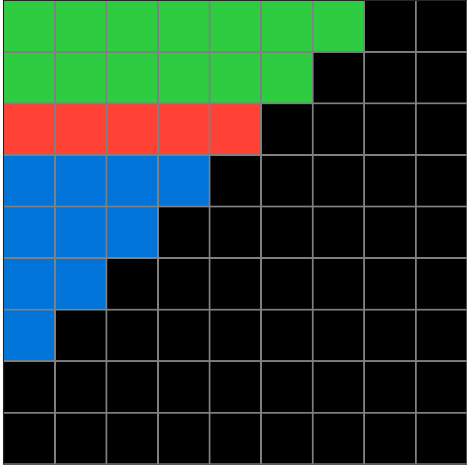
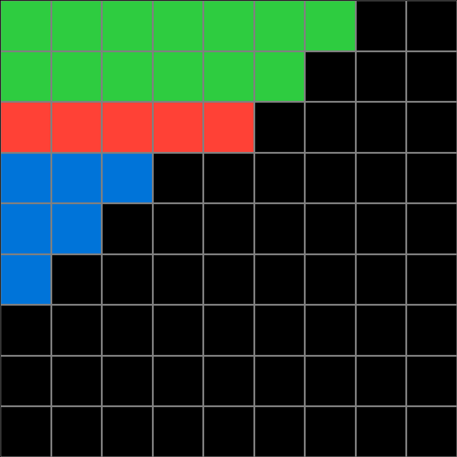
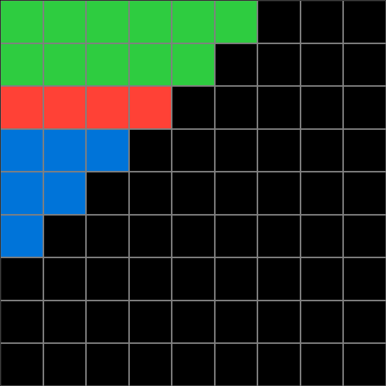
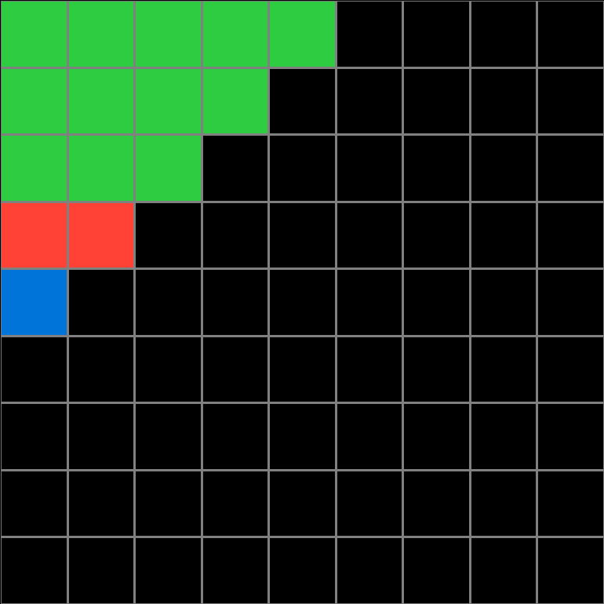
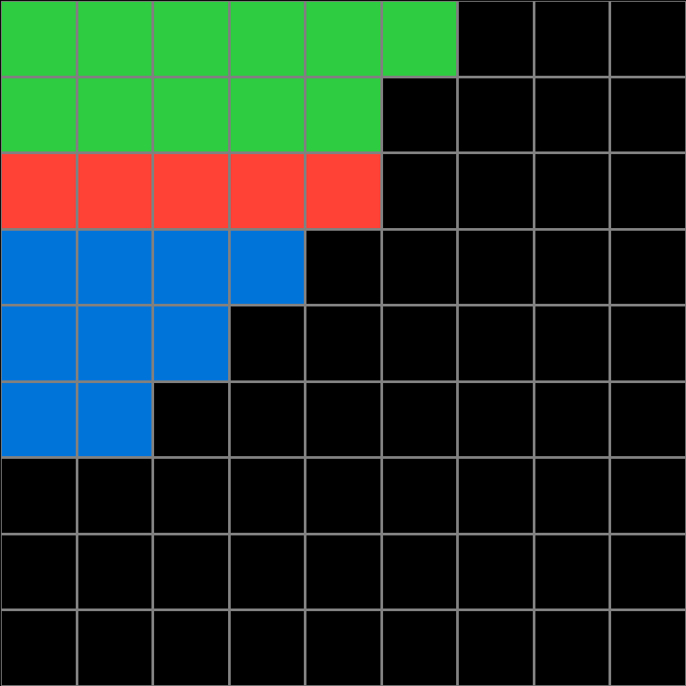
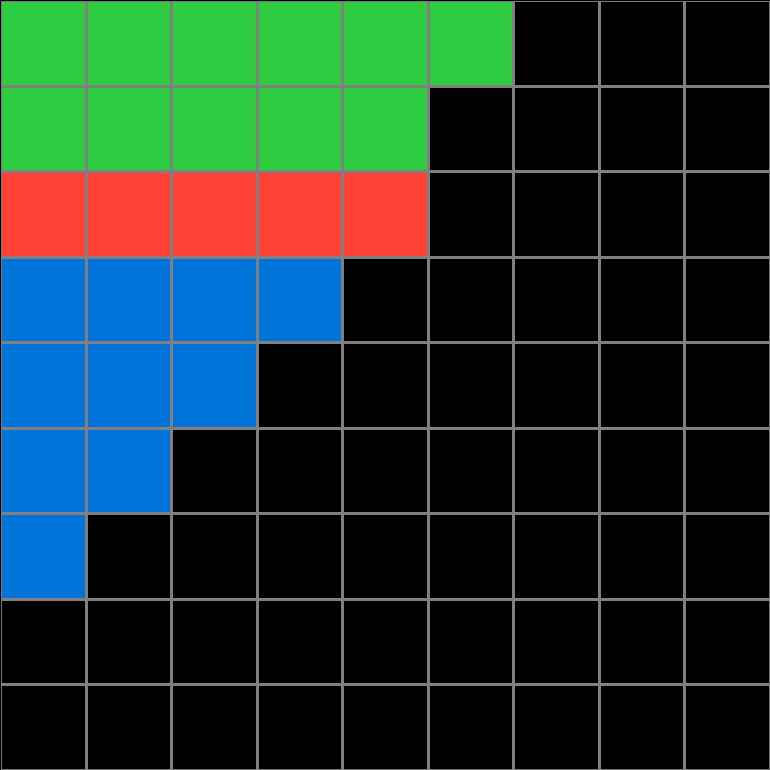
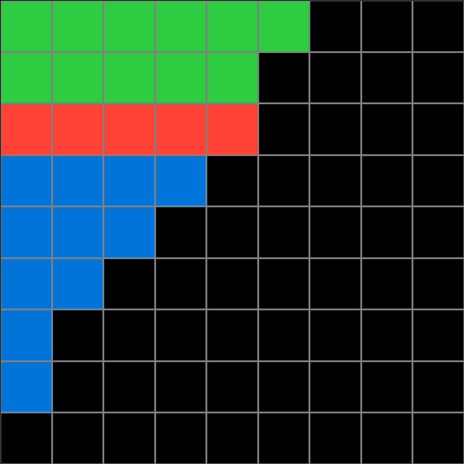

a65b410d.json
Navigation
Train Examples


Test Example


Participant 1
Initial description: In the Test Input grid, the red squares forming a horizontal row is the starting point. Rows above the red row are to be filled from the left side with green. Each row above the red row is filled with one extra square to the right, forming a stair-step pattern in the black area of the grid. Each row below the red row is to be filled from the left side with blue. Each row below the red row is filled with one LESS square than the previous row. Continue until there is only one blue square in a row.
Final description: In the Test Input grid, the red squares forming a horizontal row is the starting point. Rows above the red row are to be filled from the left side with green. Each row above the red row is filled with one extra square to the right, forming a stair-step pattern in the black area of the grid. Each row below the red row is to be filled from the left side with blue. Each row below the red row is filled with one LESS square than the previous row. Continue until there is only one blue square in a row.

Participant 2
Initial description: Make successively longer bars above the orange bar in green and successively shorter bars below the orange bar in blue.
Final description: Make successively longer bars above the orange bar in green and successively shorter bars below the orange bar in blue.

Participant 3
Initial description: Color the squares above the red area with green. Color in the squares below the red area with blue.
Final description: Color the squares above the red area with green. Color in the squares below the red area with blue.

Participant 4
Initial description: Copy the red squares in the exact position as they are in the input. Then add one more green square for every step up you go. Add one less blue square for every step you take down until there is only one blue square left.
Final description: Copy the red squares in the exact position as they are in the input. Then add one more green square for every step up you go. Add one less blue square for every step you take down until there is only one blue square left.

Participant 5
Initial description: to make a half inverted pyramid with blue beneath the orange stripe and green above it
Final description: to make a half inverted pyramid with blue beneath the orange stripe and green above it

Participant 6
Initial description: I made green lines above the red one with a rule - plus one cell once it goes higher and dark blue the lines below red line with rule - one cell less once it goes down.
Final description: I made green lines above the red one with a rule - plus one cell once it goes higher and dark blue the lines below red line with rule - one cell less once it goes down.

Participant 7
Initial description: Below the red line is blue blocks stepping down in number; above the red line is green blocks stepping up in number.
Final description: Below the red line is blue blocks stepping down in number; above the red line is green blocks stepping up in number.

Participant 8
Initial description: Colors for the rows above the red cells are green and below are blue. Only the first three rows can be green. All rows below the red cells can be blue. The cells below blue are one less and decrease by 1 per row. The opposite applies for the cells above the red. The cell directly above red is one more and increases by 1 per row above.
Final description: Colors for the rows above the red cells are green and below are blue. Only the first three rows can be green. All rows below the red cells can be blue. The cells below blue are one less and decrease by 1 per row. The opposite applies for the cells above the red. The cell directly above red is one more and increases by 1 per row above.

Participant 9
Initial description: Green above, extended one block each step up. Blue below, shortened one block each step down to one block.
Final description: Green above, extended one block each step up. Blue below, shortened one block each step down to one block.

Participant 10
Initial description: I followed the output pattern where either there are three or two rows of greens. I opted for two and for keeping my red line from my test input shorter.
Final description: I followed the pattern in example output 3 and copied my test input to the same horizontal and vertical levels to my output.



Participant 11
Initial description: I changed the new grid to 9 by 9 first, and then I copied the original input. Then I went to the lines below the red line and highlighted blue by decreasing the amount of squares horizontally by one from the line above it. Then I went to the lines above the red line and highlighted green by increasing the amount of squares horizontally by one from the line below it.
Final description: I changed the new grid to 9 by 9 first, and then I copied the original input. Then I went to the lines below the red line and highlighted blue by decreasing the amount of squares horizontally by one from the line above it. Then I went to the lines above the red line and highlighted green by increasing the amount of squares horizontally by one from the line below it.

Participant 12
Initial description: In this task, I interpreted the rule as extending green lines on the first two rows. I drew a blue line extending three rows below the red grid.
Final description: I filled the first three rows with green, then filled the next three rows with red, and finally, I filled the last three rows with blue.



Participant 13
Initial description: I copied the image and then for the lines above the red line, I changed the color to green and extended each line by one additional square to the right as I moved up. Below the red line, I made blue lines and I deleted one square from the right as I moved down until I ran out of cubes.
Final description: I copied the image and then for the lines above the red line, I changed the color to green and extended each line by one additional square to the right as I moved up. Below the red line, I made blue lines and I deleted one square from the right as I moved down until I ran out of cubes.

Participant 14
Initial description: Above the red line should be green lines that are one square longer as they ascend. Below the red line are blue lines that one square shorter as they descend.
Final description: Above the red line should be green lines that are one square longer as they ascend. Below the red line are blue lines that one square shorter as they descend.

Participant 15
Initial description: The orange horizontal bar creates a barrier between ascending green bars above and descending blue bars below it.
Final description: The orange horizontal bar creates a barrier between ascending green bars above and descending blue bars below it.

Participant 16
Initial description: In the 9x9 grid I noticed the red line. Then I noticed that the color green was above the red line, and blue below it. I noticed they were also stacked / layered like a stair case (if you look at it sideways).
Final description: In the 9x9 grid I noticed the red line. Then I noticed that the color green was above the red line, and blue below it. I noticed they were also stacked / layered like a stair case (if you look at it sideways).

Participant 17
Initial description: The output was adding green lines above the red line with each green being one block progressively longer than the last until the top of the grid and adding blue lines below the red line with each line having one block fewer until there is just one blue block on the last line.
Final description: The output was adding green lines above the red line with each green being one block progressively longer than the last until the top of the grid and adding blue lines below the red line with each line having one block fewer until there is just one blue block on the last line.

Participant 18
Initial description: I used the example outputs and copied them
Final description: I used the example outputs and copied them

Participant 19
Initial description: Draw the red line and cascade downward until there is one block left, while following the color pattern of green on top of red, then blue below.
Final description: Draw the red line and cascade downward until there is one block left, while following the color pattern of green on top of red, then blue below.

Participant 20
Initial description: Create a red line for 5 squares, make the above 11 squares green, and make the 9 squares below the red line blue.
Final description: I thought I needed to make a red line, and then make the above squares green, and the squares below the red line blue.


